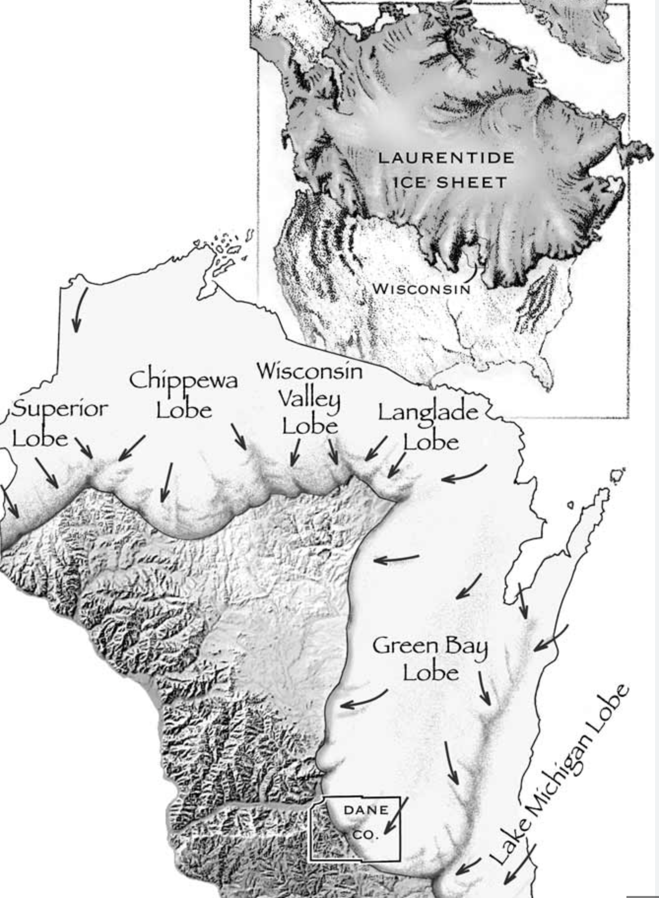
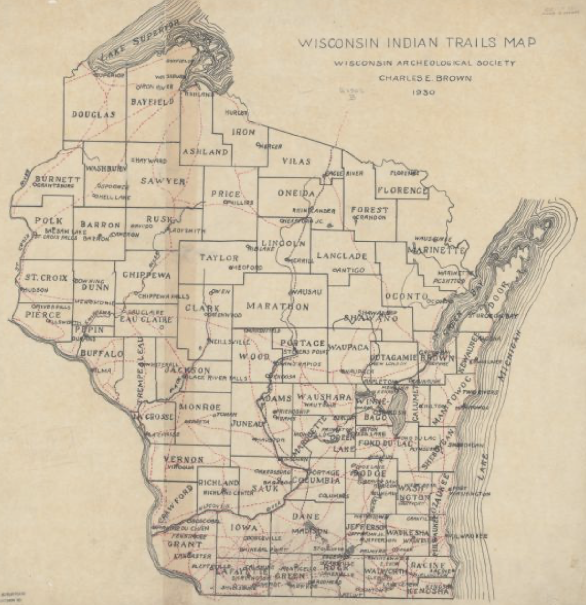

The Beginnings
When the Laurentide glacial ice sheet retreated about 19 thousand years ago, it left a low ridge along the west bank of the Milwaukee River.
There’s evidence that Native Americans traveled that ridge. Cedarburg Road may closely follow their trail.
Like most places, the intersection is a palimpsest. Its temporal stratigraphy tells the story of how a virgin landscape served a population’s needs and in doing so was changed.